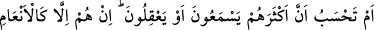

ilâhların hepsi onun teferruatıdır. Bu yüzdendir ki hevâya muhâlefet etmek, îmânın
hakîkatine ermeye sebeptir.”
Hevâdan yüz çevirmek, ululuktandır
Hevâ ve hevesi terk etmek, peygamber kuvvetidir
Ebû Süleyman (r.h.) der ki: “Nefsini hevâsına tâbi kılan kimse onun katline ortak
olmuştur. Çünkü nefsin hayâtı zikir ile ölümü ve katli ise gaflet iledir. Gaflete
düştüğünde şehvetlere tâbi olur. Şehvetlere kapıldığında ise artık ölü hükmündedir.”
Mesnevî’de der ki:
Bu arzular dünyası puthânedir. Peygamberlere de kâfirlere de yuvadır
Fakat şehvet, arınmışlara kul olur. Madenden çıkmış olan altın yanmaz
Kâfirler kalptır, arınmış olanlar ise altın gibidir. Bu iki kesim de tek bir potadadır
Kalp olan, potaya girer girmez kararır; altın girdiğindeyse altınlığı ortaya çıkar
“Semerkand’ın önde gelenlerinden birine şöyle soruldu: “Bir kimse rüyâsında Hak
Sübhânehû veTeâlâ hazretlerini ölmüş görse, tabiri ne şekilde olur?” O zat şu cevabı
verdi: “Büyükler demiştir ki bir kimse rüyâsında Hz. Peygamber’i (s.a.) ölmüş olarak
görse, bunun tabiri, rüyâyı gören kimsenin dini hayâtında (şerîatında) bir noksanlık ve
gevşeklik olduğuna işârettir. Bu ölüm, şerîatın görünen yüzüdür. Bu da onun gibidir; o
kişinin kalbi kir ve pas tutmuştur.”
Büyüklerden biri şöyle demiştir: “Huzûr maallah” makamında olan birisinden ansızın
bu hâl gitse, bunun tabiri, o kimsenin ölmesidir.
Mevlânâ Abdurrahmân-ı Câmî bu sözü bir başka şekilde yorumlamıştır: “Hevâsını
kendisine ilâh edinen kimseyi gördün mü?” âyet-i kerîmesinin hükmüne göre, rüyâyı
gören kişinin gönlünden ilâh ittihaz ettiği hevâdan birisi uzaklaşıp yok olursa, o ilâhın
ölmesi bu hevânın yok olması anlamına gelir. Bu durumda rüyâ, o kişinin huzûrunun
arttığının delil olur.” Nitekim Reşahât’ta böyle geçmektedir.
“Sen (Rasûlüm!) ona” hevâsını ilâh edinen kimseye, durumu böyle olduğu halde onu
şirkten ve günahlardan alıkoyan bir “koruyucu olabilir misin?”
Yâni sen onu korumaktan sorumlu değilsin. Sen ancak uyarıcı/korkucusun. Bu soru,
inkâr, yâni koruyucu olmadığını belirtmek içindir. Ancak bu, Rasûlullah (s.a.)’in onları
tevhîde dâvetini yasaklamamaktadır. Bilakis O’nun üzerine düşen uyarma ve onların
mazeretlerini geçersiz kılma sorumluluğunu yerine getirdiğini bildirmek içindir.
Bazı müfessirler bu âyetin kılıçla mücâdeleyi emreden âyetle neshedildiğini
söylemişlerdir.